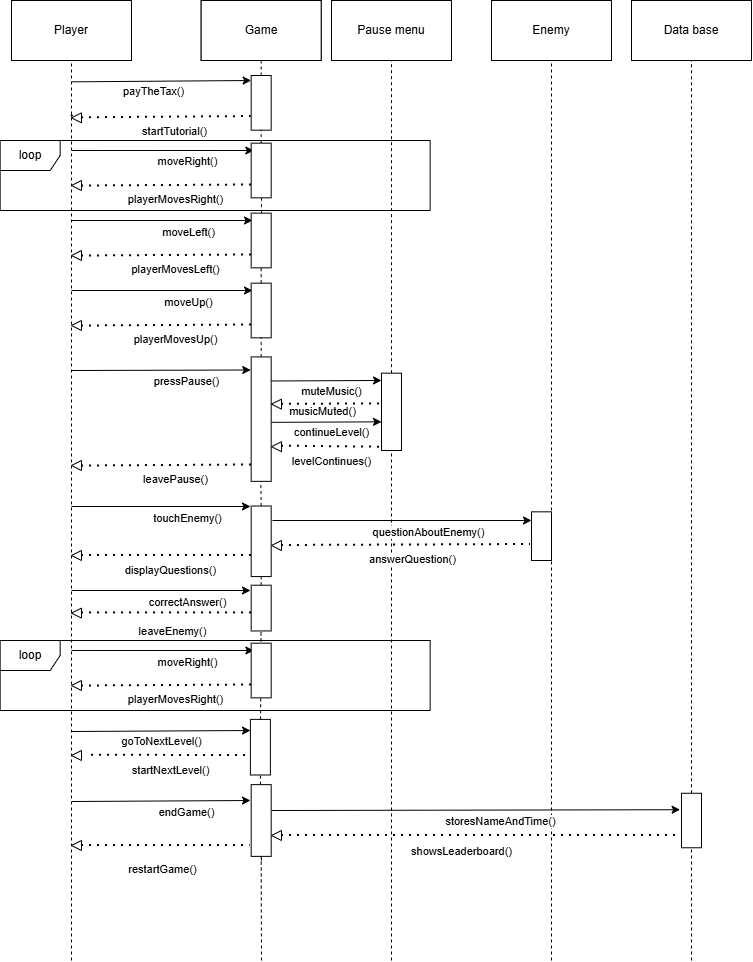

Flux et sitemap de votre projet
Par team HES-Survivors le 21/10/2025 à 09:00
Pour les processes des sequences de jeux, nous avons fait un diagramme de sequence où le joueur joue le jeux tout en répondant correctement aux questions de l'ennemi et quand il termine le jeux il peut sauvegarder son nom et son temps dans le leaderboard.
Voici le sitemap de notre application web
Le code source de l'application est disponible sur le github du projet.